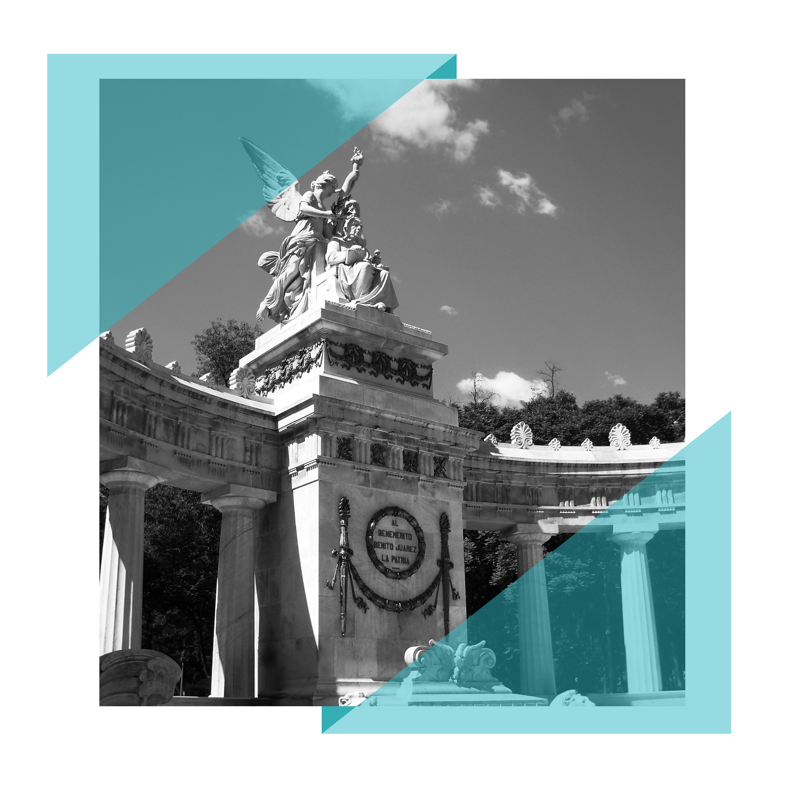

EL JARDÍN MÁS GRANDE DE AMÉRICA
Si la Alameda Central hablara, nos podría contar un sin fin de historias. Este maravilloso jardín ha visto pasar a virreyes, a los habitantes durante la época del Porfiriato, presidentes y a emperadores; músicos, turistas y orquestas. Hoy en día sigue siendo un punto de encuentro de miles de personas. Fundarla fue idea de Luis de Velasco segundo , octavo virrey de Nueva España. El 18 de enero de 1592 se autorizó esta obra que debe su nombre a los álamos que ahí se plantaron.
EL PASEO FAVORITO
A finales del siglo XVIII, se embelleció el lugar. Se ordenó rodearlo de una cerca de madera, en tanto que el virrey marqués de Branciforte, ordenó colocarle puertas de hierro. Sin embargo no todos los habitantes eran bienvenidos, había un reglamento que decía que se prohibía la entrada a toda persona que tuviera la ropa rota, sucia y anduviera descalza. Años después, bajo la gubernatura de Benito Juárez , se mandó derribar los muros de la Alameda y con ello se convirtió en un centro de reunión y paseo popular, al que por fin, podría entrar toda la gente.


UN LUGAR EMBLEMÁTICO
Años más tarde, Porfirio Díaz dio mantenimiento a la Alameda Central. Como parte de las obras que se emprendieron para el mejoramiento de la ciudad, mandó a edificar el Palacio de Bellas Artes en el límite oriente y erigió el Hemiciclo a Juárez en el costado sur del parque. Así mismo, retomó la costumbre que había iniciado el virrey Bucareli de realizar recitales musicales los domingos, misma que prevalece hasta nuestros días.
LA NUEVA ALAMEDA
Hoy en día, la Alameda se encuentra como nueva, uno de los grandes cambios fue la remodelación del Hemiciclo a Juárez; todo el mármol fue exfoliado para recuperar los detalles de esta obra histórica y emblemática, también es importante resaltar la iluminación con la que cuenta el parque, así permite que los visitantes la disfruten de noche y observen los juegos de luces que tienen las fuetes. Un verdadero regalo para sus visitantes.